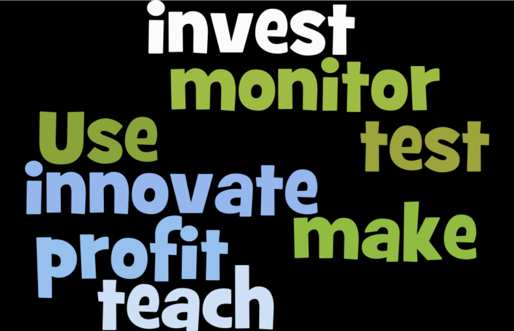

1. Introduction
The Web Content Accessibility Guidelines (WCAG) version 2.0 has been the baseline for digital equality for many years now. It is anchored into many laws and regulations across the world, even beyond its original scope of web content, it is now used to test the quality of all sorts of digital environments. WCAG 2.0 has proven itself to be a durable and reliable web standard.
One of the most important changes resulting from the WCAG 1.0 to 2.0 update was that the standard became technology agnostic. This ensured that the standard would remain relevant as technologies change. However, this update came with a trade-off. WCAG 1.0 specifically mentioned the types of elements that could be problematic, and defined what had to be done with them. In order to adapt and provide broader applicability and longevity, WCAG 2.0 adjusted the level of specificity of some requirements.
While in many cases, WCAG 2.0 was much more refined, with all sorts of exceptions and edge cases being considered, the technology agnostic language left some room for interpretations in WCAG 2.0. There is general agreement on a majority of issues, otherwise WCAG wouldn’t be as widely adopted as it was. While many organizations adopted WCAG 2.0, they found that they needed to document their own interpretations of WCAG 2.0 to improve consistency between testers.
In this whitepaper, we will take a closer look at a few, key WCAG 2.0 interpretations. We will investigate why interpretation differences can be problematic, even between different organisations and countries. We also explore why certain testers may have different interpretations. Then, we reveal how we may better deal with different WCAG interpretations, through the applicability of our proposed Accessibility Peace Model. This model intends to help all accessibility stakeholders understand where interpretation differences come from, and how to deal with them effectively.
2. Exec Summary of Findings
Without a shared testing perspective, achieving accurate test results for compliance with WCAG 2.0 can be challenging and expensive. A common cause for inconsistent accessibility results between experts is accessibility testers doing their work with different goals in mind. Natural tension exists between the goals of users, designers, developers, testers, trainers, project managers, and executives. An unstated goal for testing can be a major source of inconsistent results between tests.
It is time to stop the accessibility interpretation wars. There is no "one best way" of interpreting accessibility standards. There are different interpretations, each valid and useful in their own right. This white paper identifies the following key perspectives used for accessibility testing.
- Minimum - based on the normative text of the technical requirement. This perspective often seeks low cost and quick solution to meet legal requirements.
- Optimized - based on the spirit and the intent of the normative technical requirement, rather than just minimum compliance. This is a pragmatic approach to sustainable universal design that balances equal access, civil rights, and actual outcomes for users with disabilities with what is technically possible with other requirements, (business) goals for the product, and what is reasonable to achieve today. This perspective is the most effective use of resources in the long run.
- Ideal - based on a human factors approach that extends beyond legal compliance and pragmatic best practices. Focuses on quality of user experience for people with disabilities and innovative breakthroughs that eliminate barriers once considered impossible to solve. During initial phases, this perspective may be expensive.
By clearly defining the perspective your organization is using for accessibility testing, your organisation can save time and lower costs. Make use of the free resources for learning how to make the web accessible provided by the W3C Web Accessibility Initiative: Education and Outreach.Take advantage of the standardized testing methodologies being created by the W3C Accessibility Conformance Testing Task Force.
3. Causes of Interpretation Problems
3.1 Subjective Requirements
One cause of differences in accessibility results is the subjectivity of accessibility requirements. This seems unavoidable. After all, most accessibility questions involve asking “If A is substituted by B, does it still make sense to most users?” There are as many methods for testing accessibility as there are people who do accessibility testing. Even for something as fundamental as deciding if the text alternative of an image is sufficiently descriptive, there are many different opinions. When can an image be considered decorative? How much detail should actually be described of complex images such as maps? Is it permitted to repeat visible text in the text alternative of an adjacent image? Etc.
To address this, WCAG 2.0 has a lot of documentation, especially thanks to the work of groups like the Education Outreach Working Group, there is even more out there to help accessibility testers do their job. This is very helpful when doing accessibility testing. It is important to note that even if someone is knowledgeable of all WCAG 2.0 requirements while testing there are, and will likely always be, new questions to which there are no obvious answers.
Interpretation differences of some accessibility requirements can be explained in part by their subjective nature. This type of interpretation difference is hard to avoid, although additional documentation may certainly help with that. What W3C documentation does not help with however, is regional differences in uses of assistive technologies. There are a variety of factors that can influence this, such as what languages are supported by the assistive technologies, what training is available for them, and what assistive technologies are covered by insurance companies. These differences can change what an appropriate accessibility support baseline is, and thus change the results of accessibility testing, sometimes quite significantly.
3.2 Roles and Perspectives
Not all interpretation differences can be explained away by pointing to the subjective components of WCAG 2.0 success criteria. It seems to the authors, that many such differences have a deeper cause, which is what much of the rest of this paper is dedicated to. Many years of experience in the field have shown us that people who approach accessibility from a different goal, will often come to make different accessibility recommendations, even when going by the same success criteria and techniques.
This professional judgement, which accessibility testers rely on to make decisions in cases that aren't clear-cut, is reflected in the reports they write. It is relatively easy to determine a tester’s perspective based on their reports. This perspective has a lot to do with their role and their reason for doing accessibility testing. Here are just a few examples of the type of roles and perspectives we’ve seen:
- A programmer may tend to be fairly literal and technical in their approach, particularly looking for invalid uses of web technologies.
- An Accessibility evangelist and educator will often check that optimal solutions were used.
- A person who does accessibility testing as a means to meet (legal) requirements may tend to be far more conservative with their findings, considering anything that's not a clearly documented problem as conforming to accessibility requirements.
People go into accessibility testing and education for many different reasons. With such a variety of goals, it is not surprising that differences in interpretation can arise, especially given the subjective nature, and the abstract language of some of the WCAG 2.0 success criteria. By understanding where these difference come from, we can learn how we may go about resolving some of them. In section 4, we will take a deep dive into accessibility interpretations.
3.3 Consequences of Inconsistent Accessibility Testing
It is difficult to see how much test results differ between accessibility testers, unless you have them test the exact same thing. Many organizations that do accessibility testing have documentation on how to test, in an attempt to reduce inconsistencies. At the high end of the scale, it is likely organizations will not be able to reach more than 90% consistency. By comparing accessibility test results across organizations, countries, and disciplines it is common to find significant inconsistencies.
Inconsistencies between accessibility tests are particularly problematic for people who rely on accessibility testing to identify issues, and for their performance metrics. It is understandably frustrating for an organization to have to make accessibility fixes in content that had previously passed an accessibility test, or when their metrics suddenly go down because they've used a different accessibility test tool.
The problem that comes with varying interpretations and test methods is, that despite their best effort, web developers can never be sure that an accessibility tester will confirm that a website meets its accessibility requirements. This problem grows for websites that are required to meet WCAG 2.0 in different countries, as each of them will have their own testing agencies, all of which may find different accessibility issues. This makes meeting all accessibility requirements a moving target, which makes the definition of “done” elusive.
Inconsistent accessibility testing results will inevitably lead to unnecessary remediation costs, by creating confusion about what exactly is and isn't an accessibility requirement. This takes one of two forms:
- Under reporting - Accessibility issues were not reported during pre-production testing because of confusion about requirements. Remediation after development is more expensive.
- Over reporting - Code that met accessibility requirements as being inaccessible, causing confusion about the requirements and unnecessary remediation, taking away resources from other development tasks.
The biggest problem with inconsistencies is that they undermines the credibility of the accessibility industry. This can lead to the impression that accessibility issues cannot be measured reliably, strengthening the argument against working on accessibility at all.
4. Causes of WCAG 2.0 Interpretation Differences
4.1 What is WCAG 2.0?
Before we dive in to what causes differences in interpretation of WCAG 2.0, let’s take a brief look at what WCAG 2.0 is.
The Web Content Accessibility Guideline (WCAG) 2.0 is the international standard for digital accessibility published by the W3C. In October 2012, the International Standards Organization (ISO) established WCAG 2.0 as the digital standard for accessibility. ISO/IEC 40500:2012. WCAG 2.0 is purposefully technology agnostic so it remains relevant as technologies change.
WCAG 2.0 has two types of content
- Normative - required for conformance
- Informative - never required for conformance, for information purposes only
Some Testers are unaware of the difference between the normative and informative sections of WCAG 2.0. A major cause of confusion in WCAG 2.0 interpretation stems from one tester using the normative conformance requirements versus another tester using informative best practices and sufficient and/or failure techniques as a standard.
The WCAG normative texts can also be difficult to read. Because the success criteria must be testable and objective and universally applicable, they often can not be written in easy to read language. This can be particularly challenging for non-native English speakers.
4.2 Who Uses WCAG?
Many different types of people rely on WCAG. People with disabilities depend on accessibility guidelines so information technology is equally available to them. Designers and developers use the guidelines to help them proactively build systems that are universally accessible to all. QA Testers use them to validate that IT assets are accessible. Chief Accessibility, Compliance Officers and Product Managers use accessibility guidelines to proactively monitor and mitigate risks. Executives make decisions on the costs and benefits of the level of accessibility required by their organization. Accessibility Experts use these requirements to teach people how to design, build, test, maintain and monitor accessible information technology. Because IT is always evolving, accessibility solutions need to innovate as fast, if not faster than the leading technologies. Accessibility researchers have the opportunity to build a better future by leveraging accessibility guidelines as a driver of innovation.
These are just a hand full of different roles that use WCAG in their daily work. Considering the diverse audiences that use accessibility guidelines and their unique needs, it is no surprise that interpretations of what is required to meet the standard can be highly influenced by individual perspectives. See Appendix A: Diverse Audience Roles of Accessibility Requirements.
4.3 Goals for using WCAG
Researchers, trainers, designers, developers and testers are some of the key roles responsible for making accessibility a reality. But, considering their current primary objective, individuals in theses roles may fall on significantly different points along the accessibility spectrum (See Appendix A: Diverse Audience Roles of Accessibility Requirements for a more detailed list of stakeholders, roles, needs and benefits).
Let’s define the accessibility spectrum as a range of objectives from low to high with the six major sections being:
- None
- Optional
- Some compliance
- Minimum compliance
- Optimal - technically possible today
- Ideal - invents a better future
![6 point spectrum of accessibility from left to right. 1) None. 2) Optional. 3) Some Compliance. 4) Minimum Compliance. 5) Optimal. 6. Ideal. Mapped onto the spectrum are 5 of the different roles who apply the accessibility standard to their work. Researchers (Primarily optimal to ideal with some minimum compliance). Trainers (Primarily Optimal with a nod to minimum and ideal). Designers (the full spectrum, but primarily found in some to minimum compliance). Developers (the full spectrum, but primarily found in some to minimum compliance). Testers primarily at minimum compliance but can also be found in optimal and even ideal.](images/AccessibilitySpectrum.png "The Accessibility Spectrum")
For illustration purposes, let’s map five roles onto the accessibility spectrum of objectives. Assumptions: people in the research, train, and test role have the knowledge, skills, and motivation to do high quality accessibility work that at least meets minimum compliance. People in the design and develop role may or may not have the necessary accessibility knowledge, skills and/or motivation to do high quality accessibility work that meets minimum compliance.
- Research - many accessibility researchers range from optimal to ideal. Some researchers may focus on minimum compliance, but with a maximizing efficiency twist, using more advanced methods to automate or use AI to help reduce cost of designing, developing, and/or testing.
- Train - accessibility trainers may range from minimum compliance to ideal.
- Design - web designers may range from none to ideal.
- Develop - web developers may range from none to ideal.
- Test - accessibility testers may range from minimum compliance to ideal.
Let’s look at some examples of where a person’s role and primary objective may influence where they are on the accessibility spectrum. An individual person in a role shown in the diagram above may fall anywhere on the accessibility spectrum depending on their current primary objective.
Examples of Individuals on the Accessibility Spectrum:
- Accessibility researcher - an individual accessibility researcher may focus on the optimal and ideal end of the spectrum. They need to be able to understand the current state of accessibility requirements and their adoption, so they can identify gaps and have the opportunity to move accessibility forward in profound and meaningful ways.
- Accessibility trainer - an individual accessibility trainer may focus on the optimal while including (but not emphasizing) minimum compliance. They need to be able to understand the accessibility requirements, so they can teach designers and developers how to design and build digital content and functionality that proactively meets requirements and provides a good user experience for all people, including those with disabilities.
- Designer / developer - an individual designer or developer focused on universal design may tend to aim for optimal solutions. They may have to resort to a minimum compliance viewpoint for a sprint due to resource constraints or technical barriers. They need to be able to understand the accessibility requirements, so they can proactively design and code frontend user interfaces that meet requirements and create a good user experiences for all people, including those with disabilities. Developers and designers new to accessibility may think they are meeting requirements but only achieving partial compliance.
- Accessibility tester - Accessibility testers range from minimum compliance to ideal, depending on their primary objective.
Researchers, trainers, designers, developers and testers are just some of the roles responsible for making accessibility a reality. See Appendix A: Diverse Audience Roles of Accessibility Requirements for a more detailed list of stakeholders, roles, needs and benefits).
Recognizing that there is a wide spectrum of motivations for incorporating accessibility helps explain why we see so many differences in interpretations. As professionals, we must agree on which accessibility interpretation we are using so we can be consistent and accurate.
4.4 What causes differences in understanding/interpreting accessibility requirements?
There is a natural tension between users, designers, developers, testers, project managers and executives. Is it possible to establish an accessibility standard that balances the needs of each of these different perspectives? Let’s look at the motivations that lead to strikingly different opinions on what the accessibility requirements should be.
4.4.1 High Accessibility Standards
People with disabilities want and need equal access. They deal with barriers and discrimination every day. They are tired of waiting for basic civil rights. Sometimes a person with disabilities may have a hard time differentiating between a requirement and a personal preference.
Accessibility researchers, evangelists, trainers and testers envision how digital equality can be achieved right now. They tend to be dissatisfied with just removing the critical and serious barriers. They may want to solve problems so much that they are willing to spend a lot of time and energy. They may use accessibility standards as a driver of innovation.
Accessibility-minded designers realize accessibility is the parameter that leads to the highest levels of universal design; design so thoughtful it works for everyone from the start. They may use accessibility as inspiration.
Accessibility-minded developers know that accessibility is the foundation for robust solutions. They are highly motivated by these challenges, knowing that coding to accessibility requirements leads to a product they can be very proud of.
4.4.2 Zero to Minimum Accessibility Standard
Designers new to accessibility may resent the requirements and see them as overly restrictive and unreasonable. Developers who think the accessibility standard will only benefit people with disabilities may not be motivated to change their code patterns. Under the pressure of deadlines and an endless backlog of demands, some developers may try to get away with ignoring these requirements.
Executive leaders, legal counsel and compliance officers have to balance the cost of digital accessibility with the benefits and risks. A conservative decision to meet minimum requirements can be a valid approach for an organization with very limited resources and other critical priorities. Some executives even take a risk by delaying accessibility to a later release altogether.
4.4.3 Moderate Accessibility Standard
Accessibility Researchers who understand that the world has limited resources look for ways to solve problems efficiently. They understand that while it may be possible to require every developer in the world to code an accessibility patch, if that same problem can be solved at the user agent level, accessibility of that item can be established by default, freeing developers everywhere to work on solving other challenges that face us as a society.
Chief Accessibility Officers do not have unlimited budgets to train, monitor, and enforce the standard. They often encourage others to strive for best practices whenever possible. They must calculate the ROI on any accessibility requirement above the minimum. For the holistic health of the organization, they must select a standard of accessibility that meets the needs of people with disabilities while also allowing the business to be sustained.
Executives have many competing demands and limited resources. To remain in business, executives have to make tough decisions on how much to spend on accessibility. Smart executives see that proactively establishing a reasonable accessibility standard saves them time, money, and produces a better product. When implementing accessibility at a level higher than the minimum required, they must weigh the ROI against all their other priorities.
5. Accessibility Peace Model
A lot of time can be lost arguing over what the “correct” interpretation of WCAG 2.0 is. These range from “least effort, in order to comply with regulations” to “looking for an optimal user experience”. People testing WCAG with these two different perspectives in mind will inevitably reach different conclusions.
The Accessibility Peace Model recognizes that there are different ways of interpreting WCAG 2.0, none of which is perfect in every possible situation. For instance, it is possible to be WCAG 2.0 compliant and skip some heading levels. While heading levels may be skipped, presentation should be used to determine what heading level might be appropriate. This is fairly nuanced, and much harder to understand than a simple “don’t skip heading levels” rule. So, it makes a lot of sense to test for skipped headings during code review, and leave the nuanced discussion and weighing up to the compliance officers in case one got overlooked.
WCAG 2.0 certainly wasn’t intended to allow for multiple interpretations. But many people have approached accessibility from very different angles, fitting WCAG 2.0 to their particular needs. This makes it problematic to say that one “interpretation” is more or less correct than another. Different interpretations serve different needs. In other words, these differences exist for a valid reason. An interpretation paired with an ideal perspective can be as equally valid as an interpretation paired with a minimum perspective.
The Accessibility Peace Model recognizes that there are different, equally valid, ways to use WCAG 2.0. To get consistent results, organisations should define with what perspective they want their tests to be done. This is by no means the only measure that needs to be taken to ensure consistency, but it does make discussions on interpretations significantly more effective. To help set expectations for results, the Accessibility Peace Model defined three viewpoints along the spectrum of interpretations:
- Minimum - Content is only non-compliant if this can be proven without any doubt, based exclusively on the normative text of the accessibility guidelines.
- Optimized - Interpretations are based on the intent of success criteria, gauged by all the information provided by the W3C about the accessibility guidelines.
- Idealized - Maximise accessibility by requiring that suboptimal user experience solutions be avoided and that best practice techniques always be used as a way to pass success criteria.
5a. Minimum Interpretation
How do you define it?
Minimum Interpretation is based on the normative text of the technical requirement. The starting point for this interpretation is that content is compliant until proven otherwise. It is very important to understand the differences between normative and informative.
The following is the definition of “normative” from WCAG 2.0:
- normative - required for conformance
- Note 1: One may conform in a variety of well-defined ways to this document.
- Note 2: Content identified as "informative" or "non-normative" is never required for conformance.
- informative - for information purposes and not required for conformance.
- Note: Content required for conformance is referred to as "normative."
For WCAG 2.0, only the following texts are normative:
Informative text that can be used for research and understanding, but never for final decision making. Some of the WCAG 2.0 informative texts are:
- Understanding WCAG 2.0 is informative and should be reviewed to provide context. But interpretation decision must be fully based on WCAG 2.0 normative text.
- Techniques for WCAG 2.0 are informative and therefore not required. They should be reviewed to provide context. But interpretation decisions must be fully based on WCAG 2.0 normative text.
When there are two reasonable interpretations, support the narrower interpretation because it is all that is minimally required.
Who uses this?
This interpretation is particularly useful for organizations with urgent accessibility issues to resolve. Legislation may have changed and suddenly many new requirements have to be met. With limited resources and short deadlines, difficult decisions have to be made.
Accessibility remediation is a costly endeavour that is often a result of tech debt. This interpretation is particularly useful when retrofitting websites that weren’t built with accessibility in mind. Executive leaders, legal counsel, and compliance officers need to know what the absolute minimum requirement is so they can make informed decisions about which problems to solve now and which should be done in the inevitable redesign.
It may seem like the minimum interpretation is one that makes the most business sense, since it focuses on the least number of changes necessary. However, many years of experience shows us that this isn’t the case. This interpretation is particularly poor for teaching accessibility. By focusing on the legal requirements, this mindset ignores that accessibility is about people and good design. Many people (developers and designers included) struggle doing work they don’t see the benefit of. This inevitably leads to cutting corners that are costly to resolve after the fact. Once this initial “bar” is crossed, organizations should transition into using the optimized interpretation, since it is far less costly to maintain long term accessibility.
5b. Optimized Interpretation
How do you define it?
Optimized Interpretation is based on the spirit and intent of the normative technical requirement, rather than just minimum compliance. Optimized is smart and sustainable universal design. It suggests a pragmatic inclusive design approach that balances equal access, civil rights, and actual outcomes for users with disabilities with what is technically possible and reasonable to achieve today.
The WCAG 2.0 Understanding documents are particularly important in implementing this interpretation. They give guidance to what kinds of accessibility concerns should be addressed in the content. The focus here is on striking a balance between the needs of users as they are described in the understanding documents and the effort to put into these features.
If it takes minimal effort to create something in a way that falls within a user’s needs as described in the understanding document, then the optimal interpretation requires that this is how it must be created, even if it can be argued that the normative part of WCAG does not explicitly require it.
Who uses this?
The optimal interpretation is about creating a balance between the needs of users with disabilities and competing business needs. It is useful in organizations that want to maintain a steady level of accessibility in the long term without breaking the bank.
Teaching the optimal interpretation to developers, designers, and QA testers will help them to be motivated about accessibility. It teaches them there are good business reasons to not cut corners when doing accessibility, but also that there are competing business priorities to meet so that they shouldn’t go overboard and try to create ivory tower accessibility.
5c. Idealized Interpretation
How do you define it?
Idealized interpretation is based on a human factors approach that extends beyond legal compliance and pragmatic best practices. The idealized interpretation focuses on the quality of the user experience for people with disabilities and innovative breakthroughs that eliminate barriers once considered impossible to solve.
This approach prioritizes equal access and civil rights while also striving for delightful usability for people with disabilities. Even when there is no readily available solution or implementation is very expensive, the idealist meets the challenge head on, refusing to be satisfied with mediocrity.
An idealized interpretation of digital accessibility would be based on the following:
- Research
- Usability Studies with real people with disabilities
- Informative - elevates informative documents
- Pre-Normative
- WCAG 2.1 Success Criteria (before finalization)
- Normative
Who uses this?
Accessibility experts, people with disabilities, savvy designers, and developers know that accessibility can be used as a catalyst for innovation. Just because something is challenging today, does not mean we should not do it.
This focus on a delightful experience for users with disabilities can be useful for organizations that treat accessibility as a high priority. Some organizations use universal design as a competitive advantage, broadening their market reach. Organizations with a social function and organizations trying to set an example will often use the idealized interpretation.
Teaching the idealist interpretation isn’t just about understanding the needs of people with disabilities. Finding the ideal solution often requires an understanding of assistive technologies and user agents. This is a much higher bar to cross, and a costly one at that. Not every developer, designer, or QA tester needs to be an expert on assistive technologies. Organizations using the idealized interpretations will need at least one of these accessibility experts available to every team.
6. Standardization
The idea of a “minimum”, “optimized”, and “idealized” accessibility solution may sound familiar. Many people incorrectly think that is what the WCAG 2.0 levels A, AA and AAA were intended to do. However, this is not the case, no definition was ever written for what should go into which level. The Understanding Conformance document lists a number of aspects that were considered. For example, how weighing was done, or why some criteria seem to have multiple versions over multiple levels, and others did not.
There certainly are some gaps that were known to the WCAG Working group, even at the time WCAG 2.0 was published. The clearest evidence for that, being that right after publishing WCAG 2.0, the WCAG Working Group published advisory techniques in addition to the sufficient techniques, clearly signalling that there are “better” solutions which may not necessarily be covered by WCAG.
6a. WCAG Techniques
It is incorrect to use WCAG Techniques to decide if something is a normative WCAG violation. There are three types of techniques, and each of them can tell us a little bit about where to draw the line with regard to a particular criteria. This determination varies for each type of techniques: Failure, Sufficient, and Advisory.
WCAG Failure Techniques
Despite not being normative themselves, the Failure techniques are a clear way to know that something is a WCAG violation. Any occurance of a Failure technique must therefore be a failure, no matter how you interpret WCAG. Unfortunately, the number of Failure techniques is relatively limited. Going forward, Accessibility Conformance Testing Rules might solve this, as they will be much more precise and there will hopefully be more of them.
WCAG Sufficient Techniques
Things get a little more complicated with sufficient techniques. In a minimum WCAG interpretation, the sufficient techniques tell you when some content passes a criterion, but not when it failed them. There is a non-exhaustive list of ways a success criterion could be passed, but what happens if that isn’t the case? The minimum interpretation bases failures on normative text only. Sufficient techniques do not provide any evidence of something failing WCAG.
In an optimized approach, it is relatively common to require documented techniques to pass WCAG. Not using a documented technique is often treated as evidence of a WCAG Failure from an ideal or optimized perspective, even though Understanding Techniques document clearly states this is not the intent of the techniques. This can lead to some significant difference with the minimum perspective. Many accessibility test tools operate from an optimized or idealized perspective: if one of the known techniques wasn’t used, than the outcome is considered a WCAG issue. It is the authors’ opinion that accessibility testing tools should allow the user to choose a minimum, optimized, or idealized perspective for automated testing.
The idealized interpretation takes this even further, picking what is considered the “best” technique as the only valid way of passing a success criterion or even inventing entirely new requirements. For instance, some testers require the use of landmarks as a way to meet 2.4.1 Bypass Blocks, even though there are several other sufficient techniques.
WCAG Advisory Techniques
The advisory techniques are equally interesting. In a minimalist testing approach, there is evidence of things that should not be considered WCAG violations. They give an indication of what is outside the scope of WCAG. For instance, advisory technique G141 says to use HTML headings in order (h1 is followed by h2, not by h3). To the minimalist, the ‘advisory’ label indicates that this actually isn’t required by WCAG.
The idealist might argue differently, in that the advisory technique could be considered the “best” way to meet a particular requirement. From that perspective, it is actually better if advisory techniques are a requirement of an idealized accessibility test.
6b. Accessibility Conformance Testing
In 2016, the Accessibility Conformance Testing (ACT) Task Force of AGWG started working on a new recommendation on how to describe rules for accessibility testing. Based on the work of the Auto-WCAG Community group, which developed rules for automated test tools, the ACT Task Force aims to develop rules both for manual and automated testing. These rules will do what generally most organizations have historically done for themselves: define procedures on how accessibility testing should be done in order to get greater consistency.
If these rules end up as notes published by the W3C, they will have a similar effect to Failure techniques, giving a clear baseline that even minimum interpretation can’t (or at least shouldn’t) ignore. Unlike the Failure techniques, the ACT Rules will be designed specifically for accessibility testing. In summary, we will have a much clearer test definition to follow and good and bad test cases to calibrate the test procedure and tools with.
6c. Accessibility Guidelines 3.0
Understanding that there are different perspectives on accessibility testing can help in the design of the next major version of the accessibility guidelines. It would make sense to base the levels of conformance on these different testing perspectives. As it stands today, in WCAG 2.0 the differences between level A and AA isn’t too great in practice. Most organizations are required to meet level AA, and very few use the WCAG levels to prioritize issues.
Making the conformance levels match with the accessibility stakeholders’ views on what is minimum, optimized, and idealized has a number of benefits:
- It gives a place for these different perspectives, right in the standard. If we’re all clear on what the different levels mean, if each has a good definition that accessibility experts can draw their understanding from, we can avoid a lot of the arguments we have now that arise from us having these different perspectives.
- It gets us away from arguing if criterion X is more important than Y. What we’d do instead is ask ourselves for both X and Y, what is minimum, what is optimized, and what is ideal. Criteria flow from the answers we give on each of those.
- It creates a clear prioritization for organizations to follow. This worked a little better back with WCAG 1.0. For example, priority 1 was to mark data tables up with headings, and priority 2 was to not use tables for layout that couldn’t be properly linearized.
7. Recommendations
Over the years, a lot of time has been spent arguing back and forth over how to interpret WCAG 2.0. It is clear that there are different approaches to using the standard, useful in different situations. Before doing any design, development or accessibility testing, we recommend looking at the accessibility objective for the product. Knowing your accessibility objective will help you understand what interpretation is most appropriate.
- Meet Requirements (Minimum) - Organizations that urgently need to make existing products compliant to WCAG 2.0 are often best off following a minimum interpretation. Fixing the WCAG 2.0 minimum barriers first is an excellent use of limited resources in a very short time frame. Although not a great fit for maintaining accessibility websites in the long run, this interpretation helps decide on what must happen now, and what can wait.
- Sustainable Universal Design (Optimized) - For organizations that are starting a new project, or that have a (mostly) accessible website now and are looking to keep it this way, the optimized interpretation is the best fit. It establishes buy-in from designers and developers based on the intrinsic benefits of universal design. It requires balanced decisions between the needs of users and those of the business.
- Boldly Go Where No One Has Gone Before (Idealized) - When trying to push the boundaries of what’s technically possible today, organizations often use the idealized interpretation. Striving for an ideal approach may be difficult to balance with business needs, but can create exceptional long term value. Amazing accessibility advancements occur when research and development improves reusable components and pattern libraries. However, it could take a great deal of time, money, resources, testing, and expertise with assistive technology to consistently work at this level.
The chosen interpretation should be established and communicated in the project definition and reinforced in advance of any design, development, and testing. Testers must confirm which interpretation to use, to ensure they’re not spinning developers in circles. For example: A project using the minimum interpretation expects issues to only be reported for WCAG normative violations. But a tester using an optimized interpretation would also report best practice violations. Developers become frustrated because new issues come up in content they already thought was accessible.
Best Practices and Accessibility Optimization
In the struggle of who has the “right” interpretation of WCAG 2.0, there really aren’t any winners. Furthermore, the people losing out are those who could have benefitted from that time spent in more productive ways. By acknowledging that these perspective exist, we hope to end pointless discussions and gain an understanding of where these differences come from. To truly get away from unproductive discussion, we will need to find common ground.
It seems unlikely to the authors that the end of the A11Y Interpretation War can be achieved with a single white paper. We believe that future accessibility standards can help address this problem by using the Accessibility Peace Model. There is certainly no silver bullet solution there, but one way may be promising is by working with best practices and optimization suggestions:
- Best Practice: A rule that should always be applied by designers and developers to new products which will certainly improve its accessibility, but which may or may not be a violation of WCAG 2.0, depending on the context.
- Optimisation: A technique that has the widest possible support, and will work for the most amount of users, irrespective of the accessibility support baseline that was set to meet the WCAG 2.0 conformance requirements.
8. Acknowledgements
We want to thank the following accessibility experts for reviewing drafts of this white paper and providing insightful feedback. We take full responsibility for this original content. In other words, just because someone reviewed our white paper, does not mean they fully agree with everything we said.
Reviewers:
- Anik Ganguly
- Dylan Barrell
- John Foliot
- Mary Jo Mueller
- Susanna Laurin
- Andrew Arch
- Anonymous expert reviewer 1
Appendix A: Diverse Audience Roles of Accessibility Requirements
Source of Roles based on research by W3C Silver Task Force: Silver Stakeholders:
Stakeholder Roles and Activities
- Use it
- Make it
- Test it
- Monitor risk/benefit
- Invest in it / Profit from it
- Teach it
- Innovate it

Let’s look closer at the diverse audiences of accessibility requirements and explore their unique needs.
People who use IT
People with disabilities benefit directly when digital accessibility requirements are met.
- Role: As a person with a disability (visual, auditory, motor, speech and/or cognitive)
- Need: I need to be able to use information technology
- Benefit: So I can access the same information and functionality as people without disabilities
People without disabilities - Every consumer (with or without disabilities) can benefit from accessibility requirements. When accessibility is done with an eye towards universal design, the user experience improves for all people.
- Role: As a person
- Need: I want to be able to easily use information technology
- Benefit: So I can access information and functionality efficiently and effectively
People who Specialize in IT Accessibility
Accessibility Trainers use these requirements as subset of the materials to teach the core concepts of digital accessibility.
- Role: As an accessibility trainer
- Need: I need to be able to understand the accessibility requirements
- Benefit: So I can teach designers and developers how to design and build digital content and functionality that will meet or exceed the accessibility requirements.
Accessibility Design/Development Consultants use these requirements to help people build and maintain accessible information technology.
- Role: As an accessibility development consultant
- Need: I need to be able to understand the accessibility requirements
- Benefit: So I can guide designers and developers to proactively build and maintain digital content and functionality that will meet or exceed the accessibility requirements.
Accessibility Testers use these requirements to conduct compliance assessments.
- Role: As an accessibility tester
- Need: I need to be able to understand the accessibility requirements
- Benefit: So I can accurately test and consistently report accessibility compliance or identify accessibility barriers
Accessibility Researchers use these requirements to identify opportunities to invent better solutions.
- Role: As an accessibility research
- Need: I need to be able to understand the current state of accessibility requirements and their adoption
- Benefit: So I can identify gaps and have the opportunity to move accessibility forward in profound and meaningful ways.
People who Build IT
User Agent Developers are the ones who build the browsers (like Chrome, Edge Firefox, IE and Safari) and assistive technology (like screen readers and screen magnifiers and browser extensions).
- Role: As a user agent developer
- Need: I need to be able to understand the accessibility requirements
- Benefit: So I can build and maintain a user agent that integrates into the accessibility ecosystem.
IT Project Managers/Scrum Masters use accessibility requirements to help define the scope for the project, define the tasks and agree on the definition of done.
- Role: As an IT Project Manager and/or Scrum Master
- Need: I need to be able to understand the accessibility requirements
- Benefit: So I can define the work to be done as SMART tasks (specific, measurable, achievable, relevant, time bound).
IT Designers use accessibility requirements to understand the needs of people with disabilities so that the design solution will meet the needs of all users (including pwd).
- Role: As an IT Designer
- Need: I need to be able to understand the accessibility requirements
- Benefit: So I can proactively create design solutions that meet the needs of all people regardless of disabilities.
IT Frontend Developers use accessibility requirements to understand the needs of people with disabilities so that the front end code they develop will be usable by all people (including pwd).
- Role: As an IT Frontend Developer
- Need: I need to be able to understand the accessibility requirements
- Benefit: So I can proactively code front-end user interfaces that can be used by all people regardless of disabilities.
QA Testers use these requirements to identify basic accessibility bugs.
- Role: As a QA tester
- Need: I need to be able to understand the basic accessibility requirements
- Benefit: So I can accurately test and consistently report accessibility basic accessibility bugs
People who monitor IT compliance
Chief Accessibility Officers use these requirements to establish, communicate, monitor and enforce a measurable and reasonable accessibility standard for their organization.
- Role: As the Chief Accessibility Officer
- Need: I need to understand the accessibility requirements
- Benefit: So I can establish, communicate, monitor, and enforce a measurable and reasonable accessibility standard for the organization.
Compliance Officers use these requirements to monitor and mitigate risk caused by non-compliance.
- Role: As a Compliance Officer
- Need: I need to understand the accessibility requirements
- Benefit: So I can monitor and mitigate risk caused by non-compliance.
People who profit from IT
Executive Leaders use these requirements to
- Role: As an Executive Leader
- Need: I need to understand the ROI of accessibility requirements
- Benefit: So I can make smart business decisions about the accessibility standard that is set for my organization, the resources spent to be compliant and leverage accessibility as a form of innovation.